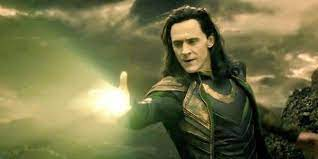

Loki possesses strength, durability, and longevity far superior to humans. The most powerful sorcerer in all of Asgard, Loki's magical abilities include astral projection, shape-shifting, hypnosis, molecular rearrangement, energy blasts, levitating, conjuration, cryokinesis, telekinesis and teleportation.
